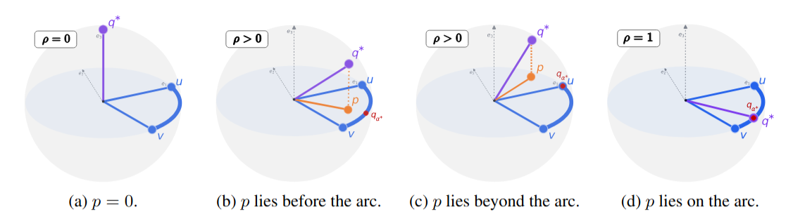

Backward-compatible upgrades of vision-language retrieval models: orthogonal alignment of new-model queries, followed by spherical interpolation with the old-model query.
TL;DR When a retrieval gallery is indexed by an old vision-language model, we rotate new-model queries into the old space (orthogonal Procrustes), then query with a point on the spherical arc between the old and the aligned new query. A single weight, chosen on a support set, makes the upgrade backward-compatible in 85 of 90 evaluations (45 with alignment alone), with no retraining and no re-indexing.
Contrastive vision-language models map visual and textual representations into a shared normalized embedding space, making cosine similarity the natural metric for cross-modal retrieval. A practical challenge arises during model upgrades: independently trained models generally produce incompatible representation spaces, so replacing a deployed model typically requires recomputing embeddings for the entire gallery, which is prohibitively expensive at scale. Orthogonal post-hoc alignment can partially mitigate this problem by mapping new-model queries into the old-model gallery space. However, because independently trained models can differ in fine-grained representation structure, the orthogonal alignment remains approximate, leaving a residual angular discrepancy between the old-model query and the aligned new-model query. We study whether interpolation along the spherical geodesic between these two normalized query representations can improve retrieval without re-indexing the gallery. We characterize when this path contains an interior query direction closer to an idealized retrieval-optimal direction than either endpoint, and connect this characterization to Recall@K through a local margin-based certification result. Experiments across multiple benchmarks and model families show that post-alignment spherical interpolation improves over orthogonal alignment alone, recovering backward-compatibility in most evaluated settings. Consistent with our geometric characterization, per-query oracle analysis shows that retrieval-favorable interior points occur frequently in practice.
The gallery stays encoded by the old model \(\phi_{\text{old}}\). Only queries change: each query is encoded by both models, the new embedding is rotated into the old space, and the two are blended along the sphere.
Fit an orthogonal map \(R^\star\) from new to old embeddings on a support set (12,637 CC3M image–text pairs). It has a closed form via one SVD. We call this baseline SVD.
For a query \(x\), move along the geodesic from the old query \(u=\phi_{\text{old}}(x)\) to the aligned new query \(v=\phi_{\text{new}}(x)R^\star\) with SLERP.
Search the unchanged old-model gallery with \(q_{\hat\alpha}\). One weight \(\hat\alpha\) per retrieval direction, chosen on the support set.
Because \(R^\star\) is a rotation, it keeps the new model's inner products intact. Independently trained models still differ in fine-grained structure, so a residual angle \(\theta\) remains between u and v. SLERP moves at constant angular speed, \(\angle(u,q_\alpha)=\alpha\theta\), so \(\alpha\) means the same fraction of the way from u (\(\alpha=0\), old query) to v (\(\alpha=1\), SVD) for every query.
Let \(q^\ast\) be an idealized retrieval-optimal query direction (used only for analysis), and let \(p\) be its projection onto the plane spanned by \(u\) and \(v\).
Appendix F connects this angular gap to Recall@K through a top-K margin bound. Empirically (Appendix M, Flickr30k, CLIP ViT-L/14 → ViT-B/32), the similarity to a relevant caption peaks strictly inside the arc for 99.87% of the 31,014 image queries, and 1,408 queries reach Recall@1 only at interior weights.

Recall along the geodesic for the CLIP ViT-L/14 → CLIP ViT-B/32 upgrade. The gallery is always encoded by ViT-B/32 (old). \(\hat\alpha\) maximizes CC3M Recall@1 for the selected support modality and direction, and is then reused unchanged on every test set.
Values from results/l14_to_b32.csv in the repository, which may differ from the paper by a few hundredths of a point.
Five upgrades (CLIP ViT-L/14 → ViT-B/32, CLIP ViT-H/14 → ViT-B/32, SigLIP2 → SigLIP1, SigLIP2 → CLIP ViT-B/32, SigLIP1 → CLIP ViT-H/14) on Flickr30k, COCO and NoCaps. An upgrade is backward-compatible when new-to-old retrieval beats the old system, \(M_{\text{new}\to\text{old}} > M_{\text{old}\to\text{old}}\).
| Method · text-only support | Flickr30k | COCO | NoCaps | |||
|---|---|---|---|---|---|---|
| I2T@1 | T2I@1 | I2T@1 | T2I@1 | I2T@1 | T2I@1 | |
| CLIP ViT-L/14 → CLIP ViT-B/32 same family | ||||||
| Old model (ViT-B/32) | 40.62 | 21.73 | 28.76 | 14.47 | 71.29 | 45.24 |
| XBT (compatibility training) | 42.47 | 22.38 | 30.73 | 15.55 | 75.02 | 48.02 |
| SVD | 42.89 | 21.49 | 30.27 | 14.03 | 69.22 | 43.92 |
| + SLERP (α̂ = 0.7 / 0.5) | 48.00 | 23.33 | 33.40 | 15.26 | 73.98 | 46.59 |
| New model (ViT-L/14), re-indexed | 48.72 | 28.27 | 34.33 | 18.68 | 73.36 | 47.84 |
| SigLIP2 → SigLIP1 same family | ||||||
| Old model (SigLIP1) | 58.09 | 39.40 | 46.99 | 30.88 | 86.20 | 64.18 |
| SVD | 45.46 | 46.28 | 36.30 | 30.53 | 75.00 | 64.64 |
| + SLERP (α̂ = 0.3 / 0.4) | 58.63 | 45.99 | 46.76 | 32.50 | 85.87 | 66.59 |
| New model (SigLIP2), re-indexed | 69.31 | 51.29 | 51.06 | 35.04 | 89.18 | 69.82 |
| SigLIP2 → CLIP ViT-B/32 cross family | ||||||
| Old model (ViT-B/32) | 40.62 | 21.73 | 28.76 | 14.47 | 71.29 | 45.24 |
| SVD | 42.80 | 23.56 | 32.33 | 15.62 | 72.16 | 46.41 |
| + SLERP (α̂ = 0.6 / 0.5) | 51.01 | 25.79 | 37.35 | 17.18 | 78.56 | 50.59 |
| New model (SigLIP2), re-indexed | 69.31 | 51.29 | 51.06 | 35.04 | 89.18 | 69.82 |
| SigLIP1 → CLIP ViT-H/14 cross family, new model not uniformly stronger | ||||||
| Old model (ViT-H/14) | 59.38 | 43.07 | 43.50 | 28.56 | 84.27 | 63.53 |
| SVD | 60.50 | 29.91 | 41.82 | 23.18 | 81.40 | 56.13 |
| + SLERP (α̂ = 0.5 / 0.1) | 64.81 | 43.38 | 46.56 | 28.79 | 85.89 | 63.89 |
| New model (SigLIP1), re-indexed | 58.09 | 39.40 | 46.99 | 30.88 | 86.20 | 64.18 |
Recall@1 (%) with text-only Procrustes support, from Tables 1 and 2. ✓ / × mark backward compatibility against the old model. α̂ is selected on CC3M (I2T / T2I) and fixed across test sets. Image-only and joint supports, the CLIP ViT-H/14 → ViT-B/32 pair, Recall@5/10, the test-set oracle α* and zero-shot classification are in the paper.
The method consists of two functions in PyTorch (see slerp_bc/method.py).
def procrustes(V_new, U_old):
# argmin_R ||V_new R - U_old||_F s.t. R orthogonal (closed form)
P, _, Qt = torch.linalg.svd(V_new.T @ U_old, full_matrices=False)
return P @ Qt
def slerp(u, v, alpha, eps=1e-7):
u, v = F.normalize(u, dim=-1), F.normalize(v, dim=-1)
theta = torch.acos((u * v).sum(-1, keepdim=True).clamp(-1 + eps, 1 - eps))
q = (torch.sin((1 - alpha) * theta) * u + torch.sin(alpha * theta) * v) / torch.sin(theta)
return F.normalize(q, dim=-1)
d = max(V_support.shape[1], U_support.shape[1])
pad = lambda x: F.pad(x, (0, d - x.shape[-1])) # zero-pads the old space when d_new > d_old
R = procrustes(V_support, pad(U_support)) # new -> old, fitted once on the support set
q = slerp(pad(old_query_emb), new_query_emb @ R, alpha=alpha_hat)
scores = q @ pad(old_gallery).T # = q[:, :d_old] @ old_gallery.T: the gallery is untouchedZero-padding keeps \(R^\star\) square when the new model has more dimensions (e.g. 768 → 512). Scores only depend on the original old-model coordinates.
@inproceedings{ricci2026spherical,
title = {Spherical Interpolation for Backward-Compatible Multimodal Representations},
author = {Ricci, Simone and Biondi, Niccol{\`o} and Pernici, Federico},
booktitle = {Advances in Neural Information Processing Systems},
volume = {39},
year = {2026}
}